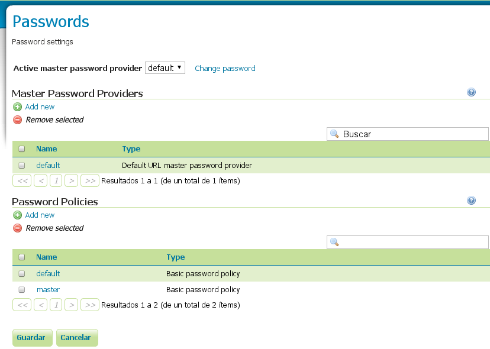
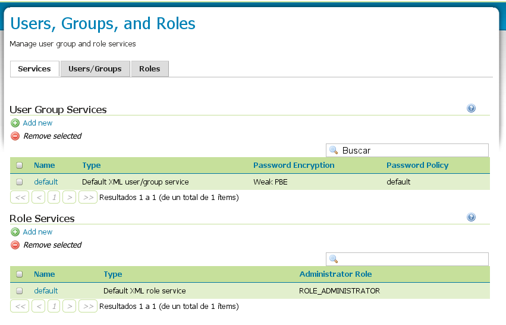

"GeoServer is a Java-based software server that allows users to view and edit geospatial data. Using open standards set forth by the Open Geospatial Consortium (OGC), GeoServer allows for great flexibility in map creation and data sharing."
Sobre el contenedor Tomcat, soltar el WAR
sudo apt-get install tomcat7
sudo mv geoserver.war /var/lib/tomcat7/webapps
También hay una versión de GeoServer con Tomcat incrustado.
Pero creo que somos lo bastante frikis para no usarlo.
Versiones de Java recomendadas:
* Java 6 - Oracle *
* JAI (aceleraciones nativas) * - Opcional
La administración de GeoServer va por interfaz web.

WMS (Ráster)

WFS (Vectorial)

WCS (Raster + Vectorial)
Poco usado, suelen separarlo en dos.
WPS (Operaciones)
Este sí que no lo usa nadie, ni siquiera viene por defecto en GeoServer.
En GeoServer, las capas se clasifican en espacios de trabajo.
Un espacio de trabajo no es más que un contenedor de capas.
Concepto namespace.
La información de las capas sale de los almacenes de datos (store).
Por ejemplo podemos meter alguna del IDEE.
Configuramos cómo se conectará GeoServer al orígen de datos.
Una vez configurado el orígen de los datos, podemos crear una capa nueva.
que nos redirigirá automáticamente a la opción de "Nueva Capa".
Las capas WMS pueden agruparse en meta-capas (layer-group)
¿Y si queremos que la capa tenga nuestro propio estilo?
Es decir, coger unos datos vectoriales y pintarlos a nuestra manera.
Lo primero, necesitaremos una capa vectorial.
La forma más sencilla, cogiendo un shapefile.
Aunque como GeoServer no nos deja subir ficheros, tendremos que ponerlos a mano en el servidor.
Cuidado con los permisos, sólo podrá usar ficheros que el usuario tomcat pueda usar.
Dado que son varios ficheros, mejor cargar el el directorio entero.
Ya tenemos el almacén de capas, pero no está publicado en ningún sitio.
Para publicar una capa WMS tendremos que definir primero un estilo (SLD).
GeoServer nos proporciona un editor de estilos.
<ogc:Filter>
<ogc:PropertyIsEqualTo>
<ogc:PropertyName>LANES</ogc:PropertyName>
<ogc:Literal>1</ogc:Literal>
</ogc:PropertyIsEqualTo>
</ogc:Filter></p>
<ogc:Filter>
<ogc:PropertyIsNotEqualTo>
<ogc:PropertyName>LANES</ogc:PropertyName>
<ogc:Literal>1</ogc:Literal>
</ogc:PropertyIsNotEqualTo>
</ogc:Filter></p>
PropertyIsEqualTo
PropertyIsNotEqualTo
PropertyIsLessThan
PropertyIsLessThanOrEqualTo
PropertyIsGreaterThan
PropertyIsGreaterThanOrEqualTo
PropertyIsBetween
Intersects
Equals
Disjoint
Within
Overlaps
Crosses
DWithin
Beyond
Distance
Es una librería independiente de GeoServer.

Permite acelerar GeoServer mediante el cacheo de tiles.
Los tiles son como el WMS, solo que cuadriculando el mapa.

Sólo guarda imágenes raster.
Cachear capas ocupa mucho espacio (muchas imágenes).
Podemos guardar los usuarios en un LDAP, en una base de datos,...
Elegir el tipo de encriptación de las contraseñas, la dificultad de las mismas,...
Podemos crear usuarios y roles de forma sencilla:
Configurar geoserver_data_dir en el web.xml
Lo mejor es utilizar memory mapped buffers (salvo que uses Windows) si tienes suficiente memoria RAM, ya que evitarás contínuos accesos físicos a disco.
Cuando se usan conexiones a bases de datos, marcar siempre la opción de validar la conexión, porque nunca sabes cuándo va a petar la conexión.